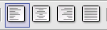

Mnogo stvari nad tabelama može da se odradi preko trake sa alatima za formatiranje tabele.
Jednom kad ste nacrtali tabelu i kad se kursor nalazi u nekoj ćeliji traka alata za formatiranje teksta postaje traka za formatiranje tabele.
-
Sabira vrednosti u selektovanim ćelijama.
-
Fiksna veličina tabele ćelije mogu biti različitih veličina.
-
Fiksna veličina tabele ali su ćelije proporcionalne.
-
Tabela nije fiksne veličine kao ni ćelije.
-
Spajanje selektovanih ćelija ( Merge Cells ) . Od više ćelija napravite jednu.
-
Deljenje selektovanih ćelija ( Split Cells ). Od jedne ćelije napravite više ćelija.
-
Optimizacija visine redova / širine kolona.
-
Dodavanje novog reda ispod reda u kojem se nalazi kursor.
-
Dodavanje nove kolone desno od kolone u kojoj se nalazi kursor.
-
Obriši red u kojem se nalazi kursor ili selektovane redove.
-
Obriši kolonu u kojoj se nalazi kursor ili selektovane kolone.
-
Izmena iscrtavanja okvira selektovanih ćelija.
-
Izmena linija selektovanih ćelija.
-
Boja pozadine.
-
Dugme za promenu alata tekst / tabela.
- Brisanje sadržaja tabele
- Selektujete ćelije kojima želite da obrišete sadržaj i pritisnete taster Delete.
- Brisanje reda / kolone
- Selektujete red / kolonu koje želite da obrišete i iz padajućeg menija Format odaberete Row(red) / Delete ili Column(kolona) / Delete ili preko trake sa alatima.
- Brisnje cele tabele
- Selektujete celu tabelu i obrišete kao red ili kolonu.
- Promena visine reda i širine kolone
- Selektujete red / kolonu i u padajućem meniju Format odaberete :
- Row/Hight
- Za visinu reda.
- Column / Width
- Za širinu kolone. Ili pomoću miša tako što pokazivač namestite da cilja liniju kolone čiju širinu menjate i kad se pokzivač promeni u dvosmernu strelicu prevučete na željenu širinu. Napomena uvek se širi / skuplja kolona koja je levo od linije.
- Izjednačavanje visine redova / širine kolona. Preko alata za formatiranje ili padajući meni Format
- Row / Space Equaly
- Izjednačavanje visine redova.
- Columns / Space Equaly
- Izjednačavanje širine kolona.
- Dodavanje reda / kolone
- Preko alata za formatiranje ili preko padjućeg menija Format.
- Row/Insert
- Dodavanje redova
- Amount
- Broj redova koji se dodaju.
- Before
- Iznad tekućeg reda
- After
- Ispod tekućeg reda.
- Coloumn/Insert
- Dodavanje kolona
- Amount
- Broj kolona koje se dodaju.
- Before
- Levo od tekuće kolone
- After
- Desno od tekuće kolone.
- Spajanje ćelija
- Selektujete ćelije koje želite da spojite i iz trake sa alatima za formatiranje odaberete Merge Cells ili padajući meni Format / Cells / Merge Celss.
Deljenje ćelija - selektujete ćelije koje želite da delite i iz trake sa alatima za formatiranje odaberete Split Cells ili padajući meni Format/Cell / Split.
- Split cell into
- Podeli ćeliju na željeni broj delova.
- Horizontaly
- Podela na redove
- Into equal proportions
- Porporcionalno
- Verticaly
- Podela na kolone.
Menjanje okvira tabele
Ako želite da menjate debljinu ili vrstu linije kojom je iscrtana tabela to možete uraditi preko ikona na traci za formatiranje.
Borders– birate koje linije će biti iscrtane u tabeli.
Line Style – birate izgled linija u tabeli.
Background Color – birate boju pozadine za selektovanu-e ćelije.
Položaj teksta u ćeliji
Tekst u tabeli se ravna po vertikali i horizontali.
Po vertikali – u padajućem meniju Format / Cells
- Top
- Uz gornji okvir ćelije.
- Center
- U centar u odnosu na gornji i donji okvir ćelije.
- Bottom
- Uz donji ovir ćelije.

Po horizontali – na traci sa alatima za formatiranje
- Left
- Uz levi okvir ćelije.
- Center
- U centar u odnosu na levi i desni okvir ćelije.
- Right
- Uz desni okvir ćelije.
- Justified
- Podjednako u odnosu na levi i desni okvir ćelije.